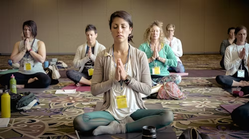

Meditation is a powerful tool for improving mental health. By focusing on the present moment and quieting
the mind, meditation can significantly reduce stress, anxiety, and depression. Regular meditation
practice increases brain function, enhances emotional regulation, and promotes a sense of inner peace.
It can help improve focus and concentration, making it an excellent practice for those with hectic
schedules. Meditation not only reduces stress but also improves overall well-being, leading to a
balanced and calm lifestyle.
Mindfulness in Daily Life
Mindfulness is the practice of staying present and fully engaged in the current moment. It can be easily
integrated into daily activities like eating, walking, or even during work. By focusing on what’s
happening right now, without distractions, mindfulness helps reduce stress and improve overall
well-being. It allows you to break free from negative thought patterns and encourages you to be more
patient and compassionate with yourself and others. Practicing mindfulness regularly can improve focus,
boost emotional resilience, and enhance the ability to handle difficult situations calmly and
thoughtfully.
Overcoming Stress and Anxiety
Stress and anxiety are common in today’s fast-paced world, but they can be managed effectively with the
right techniques. Deep breathing exercises, progressive muscle relaxation, and mindfulness can help calm
the nervous system and ease tension. Regular physical activity, like yoga or even a daily walk, also
helps to reduce anxiety levels. Additionally, managing stress through time management and setting
realistic goals can help prevent burnout. Talking to a counselor or therapist can provide professional
support to cope with stress and anxiety. Adopting healthy habits and seeking support are essential steps
in overcoming stress.
Yoga for Mental Health
Yoga is much more than just physical exercise—it’s also an essential practice for mental health.
Combining breathing techniques, physical movement, and meditation, yoga helps reduce anxiety,
depression, and stress. The mindful movements promote relaxation, improve emotional regulation, and help
balance the nervous system. Regular yoga practice can increase flexibility and strength, while calming
the mind. Whether you’re new to yoga or a seasoned practitioner, its mental health benefits are
undeniable. Yoga provides a range of benefits for the body and mind, promoting long-term wellness.

Importance of Self-Care
Self-care is vital for maintaining mental health. Taking time for yourself through rest, hobbies, or
simply taking a break helps recharge your energy and reduce stress. Activities like taking a walk,
reading a book, or enjoying a warm bath can promote relaxation and clarity. Prioritizing self-care
builds resilience, enabling you to handle life's challenges more effectively. When you take care of
yourself, you're better equipped to face challenges with patience and grace, improving overall mental
health and well-being.
The Science of Happiness
Happiness is not just an emotion; it's also a science. Research shows that happiness is influenced by
various factors, including genetics, life circumstances, and our daily habits. Positive social
connections, a sense of purpose, and engaging in enjoyable activities are key components of a happy
life. Gratitude, maintaining a positive mindset, and participating in activities that bring joy can
significantly boost happiness. Studies also show that helping others and practicing kindness can improve
our well-being. Understanding happiness can help us make choices that lead to a more fulfilling and
joyful life.